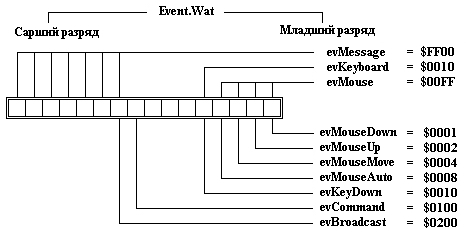

|
|
|
|
События от мыши
Существуют 4 вида событий от мыши: событие evMouseDown возникает как отклик на нажатие кнопки мыши; когда кнопка отпускается, возникает событие evMouseUp; перемещение указателя мыши порождает событие evMouseMove; наконец, если кнопка мыши удерживается в нажатом состоянии, Turbo Vision периодически генерирует событие evMouseAuto. С каждым событием от мыши в записи TEvent передаются также координаты, которые имеет указатель мыши в данный момент. Отметим, что в отличие о.т других координат Turbo Vision координаты мыши задаются относительно границ экрана, а не относительно границ какого-либо видимого элемента. Горизонтальная координата мыши меняется в диапазоне от 0 до 79, вертикальная - от 0 до 24 (режим 25 строк на экране) или от 0 до 42/49 (режим 43/50 строк).

Рис. 18.1. Разряды поля What
События от клавиатуры
В этом классе событий имеется единственное событие evKeyDown, связанное с нажатием на клавишу. В поле TEvent.KeyCode в этом случае содержится так называемый расширенный код клавиши, который Вы можете интерпретировать как совокупность двух байт: CharCode и ScanCode. При нажатии на алфавитно-цифровую клавишу поле CharCode содержит соответствующий ASCII-символ, при нажатии на функциональную клавишу поле CharCode содержит символ #0, а поле ScanCode - код сканирования нажатой клавиши. Для облегчения идентификации нажатой клавиши можно использовать константы kbXXXX, определенные в интерфейсной части модуля Drivers.
Сообщения
Сообщения бывают трех видов: команды, общие сообщения и пользовательские сообщения. Команды помечаются в поле What флагом evCommand, общие сообщения -флагом evBroadcast и пользовательские сообщения - константой, определенной пользователем. Большинство событий преобразуется в команды. Например, если пользователь отметит мышью какое-то поле строки статуса, сообщение от мыши поступит в конечном счете в обработчик событий строки статуса (любой видимый элемент имеет метод HandleEvent, называемый обработчиком событий, см. п.16.6.2), который определит, какое именно поле было отмечено. С каждым полем строки статуса обычно связана какая-то команда, поэтому обработчик очистит пришедшее к нему сообщение от мыши и создаст новое сообщение, содержащее выбранную команду. Общие и пользовательские сообщения не являются исключением и обычно также преобразуются в команды.
Пустые события
Пустым событие становится после его обработки каким-либо видимым элементом. Технически пустое событие соответствует значению TEvent. What = evNothing = 0. Когда событие обработано, видимый элемент вызывает метод ClearEvent, с помощью которого в поле What устанавливается значение evNothing. Объекты должны игнорировать событие evNothing, поскольку оно уже обработано каким-то видимым элементом.
|
|
|
|